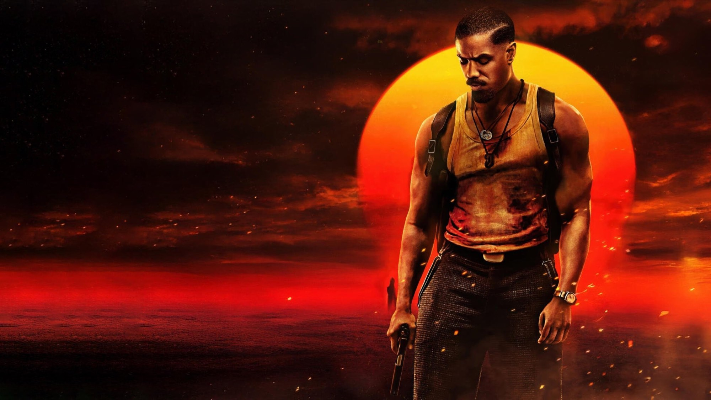

Blog
Approfondimenti, guide, premi e festival, liste di film e serie da vedere e dove trovarli in streaming.
Tutti gli articoli

One Battle After Another e Pynchon: cosa resta di Vineland
Vent'anni di tentativi, un romanzo pieno di digressioni e un film che ne ha preso solo ciò che serviva: la strada di Paul Thomas Anderson da Vineland a Oscar 2026
Il DC Universe di Gunn: guida in ordine di uscita
Da Superman a Lanterns, aspettando Clayface e Man of Tomorrow: cosa guardare, in che ordine e su quale piattaforma

Film usciti al cinema a settembre 2026: i più interessanti
Dal Resident Evil di Zach Cregger al Brad Pitt di Heart of the Beast, passando per Silent Friend e la reunion degli Oasis: il mese in sala, film per film
Le migliori serie Apple TV da vedere adesso
Da Scissione a Pluribus, passando per Slow Horses e The Studio: sei serie, una per umore, e dove si trovano oggi
Novità in streaming nel weekend: 2-4 ottobre 2026
Da La valle dell'Eden su Netflix ad American Horror Story 13 su Disney+, cinque serie da mettere in lista per i prossimi tre giorni

Verity: perché tutti parlano del thriller con Anne Hathaway
Un romanzo nato come autopubblicazione, una scrittrice spinta da BookTok, due star e una critica tiepida: cosa c'è dietro il caso della settimana

Le serie TV più attese dell'autunno 2026
Da Carrie di Mike Flanagan al ritorno degli Anelli del Potere: il calendario delle serie più attese, piattaforma per piattaforma

8 horror da vedere in streaming per Halloween
Dal labirinto dell'Overlook Hotel ai bambini scomparsi di Weapons: otto horror amati dalla critica, tutti in abbonamento in Italia

La rivincita della pellicola: VistaVision e IMAX
Da The Brutalist a The Odyssey, passando per Sinners e Digger: il formato più antico è diventato il più ambito di Hollywood

Cannes 2026: Palma d'oro a Fjord e tutti i premi
La giuria di Park Chan-wook premia il dramma familiare con Sebastian Stan e Renate Reinsve, Zvyagintsev prende il Gran premio, regia e interpretazioni divise a metà: il palmarès della 79ª edizione

Oscar 2026: tutti i vincitori, i record e le sorprese
Paul Thomas Anderson fa il pieno, Sinners entra nella storia con 16 candidature, Michael B. Jordan vince per un doppio ruolo: la notte del 15 marzo, categoria per categoria

I migliori film del 2025 secondo la critica (e dove vederli)
Abbiamo messo insieme le classifiche di fine anno di centinaia di critici: ecco i dieci film più amati del 2025, da Paul Thomas Anderson a Jafar Panahi, con la piattaforma dove trovarli
Venezia 2025: tutti i premi, da Jarmusch a Servillo
Il film a episodi di Jim Jarmusch conquista l'82ª Mostra, Toni Servillo è il miglior attore per La grazia di Sorrentino, Gianfranco Rosi porta a casa il Premio speciale: il palmarès commentato

Cannes 2025: Palma d'oro a Jafar Panahi e tutti i premi
Il regista iraniano trionfa con un thriller girato senza permessi, Joachim Trier prende il Gran premio, il Brasile di The Secret Agent fa doppietta: il palmarès della 78ª edizione